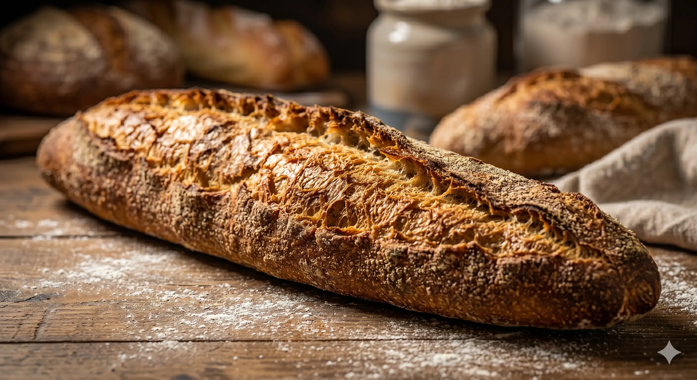
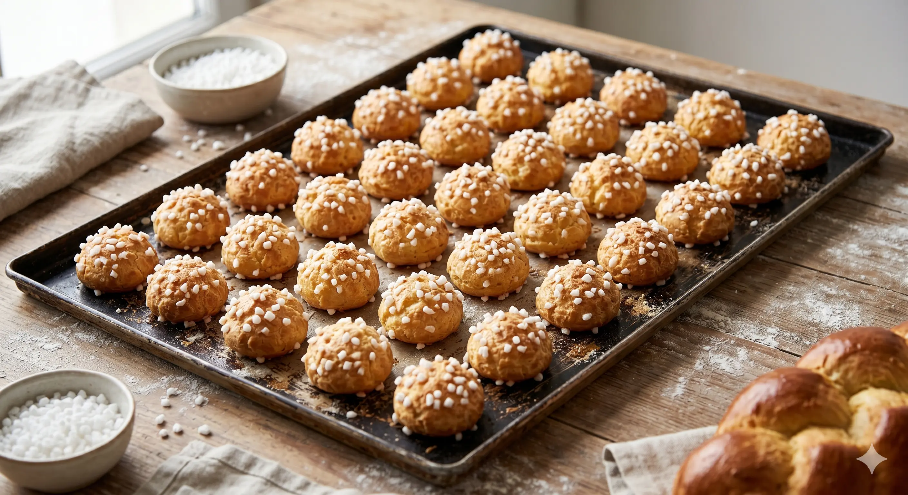
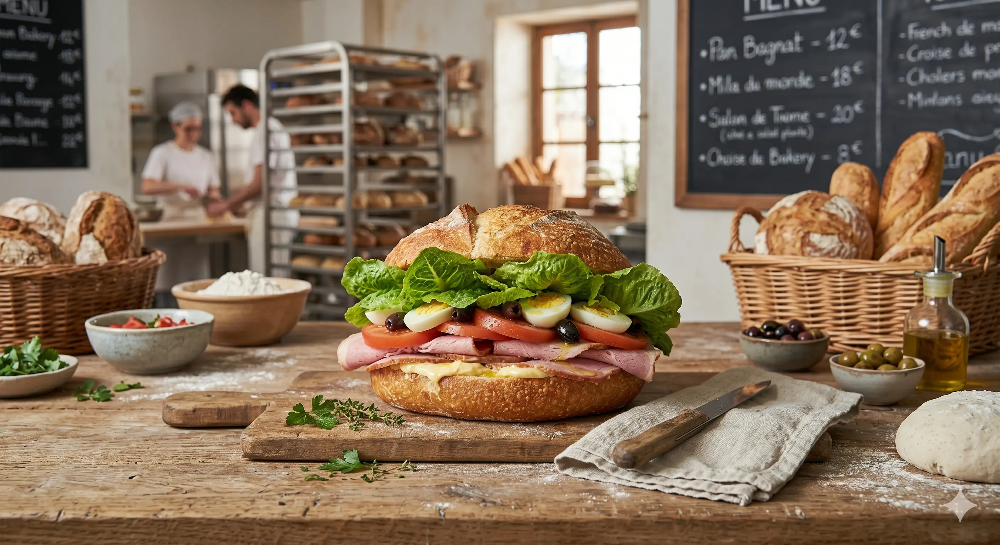

Baguette tradition
Croustillante à l'extérieur, moelleuse à l'intérieur.

Des recettes traditionnelles, cuites chaque matin.
La Boulangerie du Coin est une boulangerie artisanale fictive qui célèbre le goût et le savoir‑faire traditionnel. Nous utilisons de la farine de qualité et levains naturels pour des pains riches en saveurs.



Croustillante à l'extérieur, moelleuse à l'intérieur.

Feuilletage beurré, cœur chocolaté.

Légère et saupoudrée de sucre perlé.

Pains frais garnis avec soin.

Fruits frais et crème légère.

Nos pains cuisent lentement pour développer la croûte et les arômes.
Des gestes précis pour une mie harmonieuse.

Une petite équipe passionnée, dédiée au bon pain.

Du mardi au dimanche — 7h00 à 19h00
Fermé le lundi